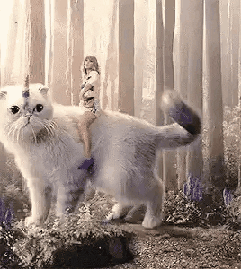

She is working on re-recording all of them, to actually own her work. The top row is her original albums, and the bottom row is the re-recording artwork. If it's a question mark it's because she hasn't released the album yet!

These albums were released after she left her record label
Because she released them under a new record label,
she was able negotiate the terms to her liking and considers them to be legally her property.